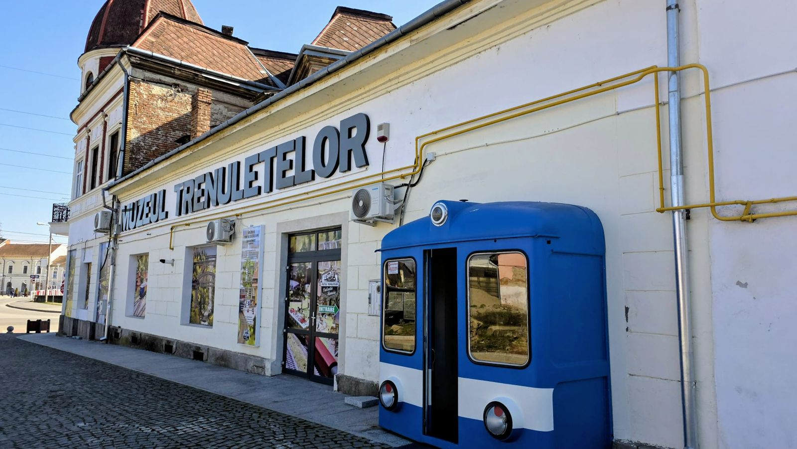
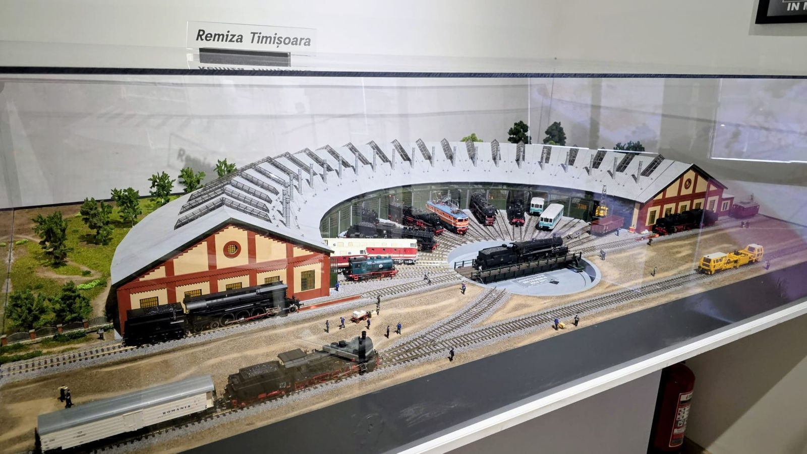
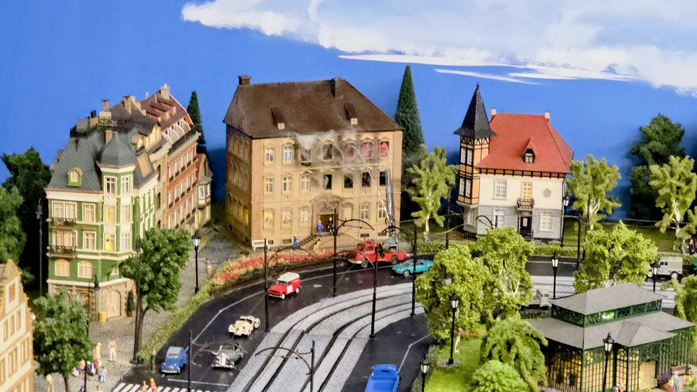
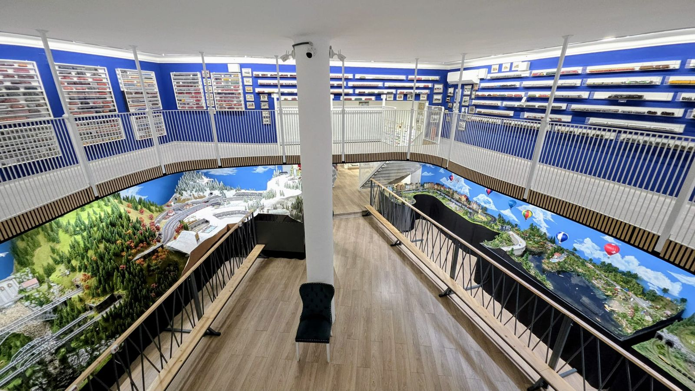
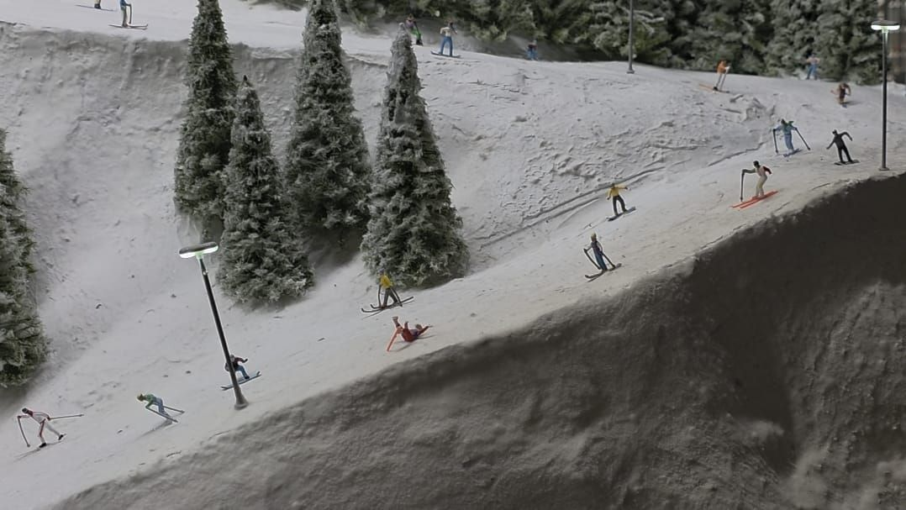
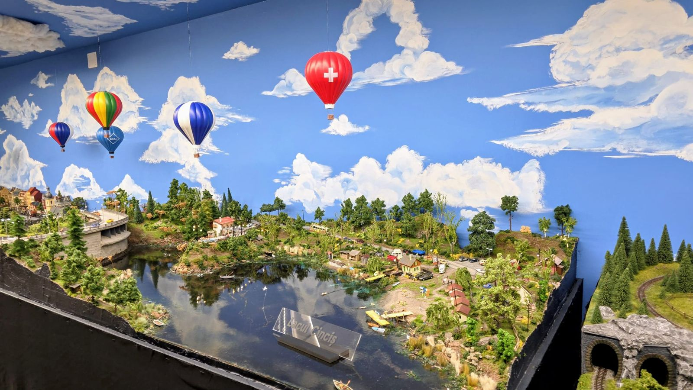

Journey 02 · Hunedoara Note 10 of 12 Field Note
Tiny Worlds in Hunedoara
A small museum of trains and memory

The day I visited Corvin Castle I was wandering around Hunedoara afterward, talking with Jason on video chat. My data had just rolled over and suddenly I had infinity service, which meant I could take him on a tour of the town using video chat. While walking around the square, I spotted a small building with a train car for an entrance and a sign for a miniature train museum.
Jason immediately said I had to go in.
He loves model trains. His dad worked for the railroad, and Jason has always talked about someday having the space to build one of those big elaborate train layouts at home. So naturally, seeing a museum dedicated to miniature trains immediately caught his attention.
It was late, and the museum would be closing soon, so I told him I would come back the next day.
The next afternoon, while wandering around Hunedoara before catching my bus, I walked back over. The museum itself is larger than you might expect, though still small enough that it feels personal. Inside were several large model layouts: miniature towns, train stations, hillsides with tunnels, farms, little villages, and rail lines weaving through all of them.

One layout recreates the train station in Timișoara. Another shows a more imaginative European countryside, with farms, tunnels, and a fortress overlooking the town. Throughout the displays there are buttons you can push that trigger little animated scenes. A band begins to play. Horses circle in a corral. Tiny mechanical figures start moving.
It’s charming in exactly the way miniature worlds tend to be.
Along the walls in one section were photographs, trophies, and videos of off-road racing and competitions. The curator eventually came over and introduced herself, offering to explain the museum.
The entire collection, she told me, belonged to one man.
The photographs on the walls were all of him: The racing trophies, the trains, the models. It had been his lifelong hobby. He was active in both the model train community and in racing circles.
He died suddenly, in his fifties.
The museum exists because of his wife.
After his death, she gathered his collection and with help from volunteers in the community, created the museum as a way to preserve the things he loved. People helped build the layouts, install the tracks, and arrange the displays. The result is less like a formal museum and more like a community-built tribute.
You can feel that when you walk through it. Nothing about the place feels sterile. It feels cared for. Kids laugh and rush to press buttons and watch trains go in and our of tunnels. Parents watch the racing videos. This is a place dedicated to sharing community and joy, not exhibits.

At the back of the building there is a large train layout that the curator offered to demonstrate for me. I sat down on a bench and she started a short light show.
The lights dimmed and the little town shifted into evening. Tiny streetlights flickered on. Cars slowed. A storm rolled through with flashes of lightning and the sound of rain. Smoke drifted from one of the buildings as firefighters worked to put out a blaze. Then the clouds cleared, the stars appeared above the town, and eventually the sky brightened again with morning.

It only lasted a couple of minutes, but it was beautifully done.
Upstairs were dozens of engines and train models from different eras. Jason later explained some of them to me when I showed him the photos. Interestingly there was no Amtrak equipment, which makes sense since Amtrak is uniquely American, but it was still funny to notice that my personal train reference point didn’t appear anywhere in the collection.
But the part I have always liked about model train displays is not really the trains.
It’s the stories.
When you first look at one of these layouts you see the obvious things: the buildings, the tracks, the trees. But if you slow down and look closely, you start to notice the tiny scenes hidden throughout the town.

A fisherman sitting quietly in a boat. A couple on a bench overlooking the lake. Children playing near a house. A skier tumbling down a mountain. A farmer chasing escaping sheep from a pen. Small groups gathered outside a church for a wedding. Little moments frozen in place.
Each one is part of a story frozen for a moment.
Someone built those details on purpose. They imagined a town and then populated it with hundreds of tiny lives happening all at once. If you take the time to look closely, you can almost construct a whole narrative from one side of the display to the other.
Standing there, hearing the story of the man who had collected all of this, I found myself thinking about Jason.
He loves things like this. The small details, the patience required to build a world piece by piece. Watching this museum that had been created to preserve someone’s passion made me think about what it means for hobbies like this to become part of a life’s story.

One day, long after the trains stop running and the people who built them are gone, someone else might walk into a room full of tiny towns and find all new stories.
It is a beautiful way to remember someone.
And if Jason ever comes to Romania, I already know one small museum in Hunedoara that I would bring him back to see.
Originally published at fieldnotesfromabroad.com/2026/03/14/field-notes-tiny-worlds-in-hunedoara/